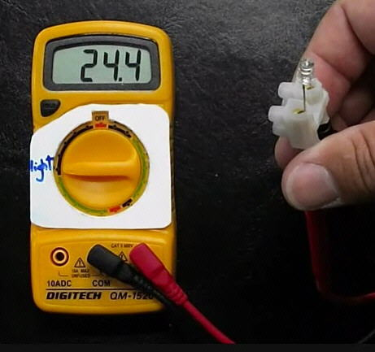
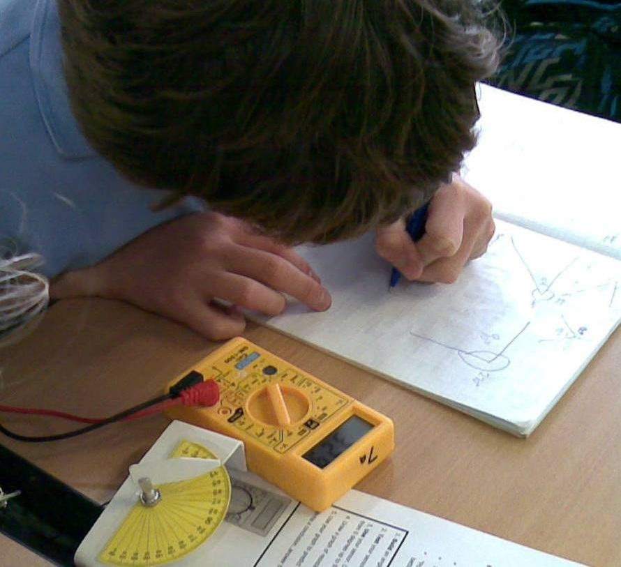

Development of Multimeter-Based Sensor Systems
Michael Fenton came to Secondary teaching with research and industry experience. He knew that investigating how the world works requires seeing more than the eyes alone can reveal. School science equipment is limited, with expensive data loggers and sensors reserved for senior classes and limited to specialist subject use. This means that junior general science classes are unlikely to access tools that could transform their learning and view of the world. From the early 2000's Michael developed and trialed low-cost sensor systems for cross-curricular learning in junior science and mathematics classes. Their use was extended to senior specialist subject areas with great success.
Key ideas
- Michael pioneered the concept of using digital multimeters as substitutes for data loggers for cross-curricular learning at all levels.
- He developed a wide range of DIY home-made and low-cost sensors, many cost just a few cents. Sensors can measure water vapour, temperature, pressure, alpha radiation, visible light, ultra violet (UV) light, infra red (IR) light, water hardness, static electric fields, mobile phone signals, angles, magnetic fields, and salinity.
- These robust digital multimeters (DMM) can be used in a wide variety of subjects, such as Physical Education, Horticulture, Calculus and Statistics.
- Michael invented the "Build it, Test it, Use it" pedagogy for inquiry-based learning and discovery at home as well as school.
- He promoted affordable, inquiry-driven cross-curricula learning sharing his research at conferences, through publications, and on his Nexus Research Group website.
- Michael's DMM digital multimeter datalogger technology is still being shared by other educators. Michael pioneered the general use of a low-cost, scalable solution to make experimental and hands-on authentic maths, science, and discovery learning accessible in resource-limited schools.
Build it
Under-confident teachers and students were found to be confused by the markings on the digital multimeters. Two strategies were employed that seemed to overcome this. Firstly, a plastic cover was cut and placed over the central dial to cover distracting labels on the meter. An erasable marker was used to label the dial setting as ‘heat’ or ‘light’ or ‘salt’, etc. This aided the second strategy which was to remind students each time that we treat the meter as a ‘what does it measure today?’ machine.
For safety reasons, as well as the ability to quickly change sensors, an electrical terminal block was fitted to the DMM probes. The probes that come with the meters had pointed ends that could cause injury if used improperly. In the trial only single component sensors were used. Some components must be inserted ‘the right way around’, such as light emitting diodes (LED’s) and signal diodes. It was a simple matter to remind students that if the display does not give an appropriate reading, just insert the sensor the other way around.

"'Build it' Digital multimeter data logger assembly. Meter lead tips are fitted into a terminal block with a LED functioning as a visible light sensor fitted to the other side of the block. The dial cover is in place. The dial setting is to 200mV range.
Test it
Students had not used multimeters before. Students carried out a number of teacher-guided activities pre-tested and guaranteed to work using different sensors. This built up their confidence and provide some prior knowledge before embarking on their own investigations. A typical introductory worksheet had three stages;
- Build a sensor - a ‘howto’ description or image of how to connect the electrical component as a sensor and which dial setting to use.
- Test your sensor - an activity already tested (and calibrated if appropriate) by the teacher to demonstrate the equipment has been assembled correctly and is performing as expected.
- Use your sensor - a first attempt at an authentic learning activity that permits students to develop play with the equipment and gain confidence in questioning and data collection. As student worked in pairs or teams, this also helped with participating and contributing skills.
Activities generally fall into simple “presence/absence” qualitative measurements suitable for younger students or quantitative measurements suitable for older students to analyse further.
When selecting a sensor, it is helpful to consider the prior knowledge and experience of the students. Not all sensors behave in a positive linear fashion and this can confuse some teachers as well as students. For example, a light emitting diode (LED) will generate a voltage in proportion to the intensity of light they receive. This means the bigger the reading on the meter, the more light is present. This is expected by younger students. However, care must be taken if using a signal diode as a temperature sensor since the resistance reading decreases with an increase in temperature and is only linear over a certain range of temperatures. Sensors used in the trial were selected on the basis of cost, chemical and electrical safety, simplicity and robustness. In general, a good sensor will affect the meters ability to measure current, voltage or electrical resistance as a consequence of a change in a single environmental factor.
When analysing the data and discussing the activities, there were plenty of opportunities for students to learn about calibrating sensors, such as the temperature and angle sensors. When activities were based on surveys or mapping, students talked about the need to take more than one measurement to get an average reading.

"'Test it' digital multimeter angle sensor. Students calibrate the sensor plotting a simple line graph. The change in resistance of a volume control dial functions as an angle sensor.
Use it
While qualitative presence/absence readings may seem the less advanced activity compared to quantitative investigations, surveys of school grounds or local parks and estuaries can encourage higher level thinking and should not be dismissed without a clear understanding of the other learning opportunities that could arise.
Authentic cross-curricula learning at school and home
In general the devices enabled students to sense more of the world around them. Students could sense things they could not see or touch themselves, and this raised their curiosity and interest. Collecting real data was exciting, and the data they collected had real-world consequences for them. Taking the multimeters out of the classroom permits learners to survey the school grounds, survey parks, and investigate their homes. Engaging with their own data, collected using equipment they built and understood, was shown to supported authentic learning, permit real-world problem solving, and enabled most students to reach the relational stage or higher on the SOLO taxonomy (Hattie and Brown, 2004). Students also used the f-word. They reported they had fun!
Warning: DO NOT let students test boiling water or live electrical outlets!
There is no need to calibrate temperature sensors using boiling water. Where in the real world would a student expect to record that temperature? For some reason teachers default to using ice and boiling water to calibrate sensors. If you are investigating cooling curves, YOU should safely get sensor readings at 100 °C and PROVIDE THIS to learners.
Always remind learners that scientists work carefully and safely, no matter what they see in movies or TV!
Download a student activity [PDF]
Making low cost DIY home-made sensors
Since the early 2000's Michael has developed a number of sensors; some are shown on his YouTube channel. Some sensors are very simple single component sensors costing a few cents. Other sensors are inexpensive but include a power source and a few more components. Apart from the straightforward voltage, current and resistance measurements, the multi-meters can also detect; visible light, infra-red light, ultra-violet light, ionising radiation such as alpha particles, temperature, angle, bend, salt, humidity, pressure, touch, paper thickness, mobile phone transmissions, static electric fields, and more.
Download a workshop presentation [PDF]
In this video Michael imagines equitable access to authentic learning tools if his digital multimeter kit is added to a learners school stationery supply. Green School Educators Programme, Teaching for sustainability: wall-less teaching.
YouTube videos
Michael has documented the simple assembly process and working principles in YouTube videos. He demonstrates the use of a terminal block to attach sensors to a digital multimeter. The markings around the dial are hidden using a plastic cover and the 'yellow boxes' become simply a heat sensor, or a light sensor, depending on the label written in marker. This focuses students attenttion to the readings until they become expert users and understand the different settings.